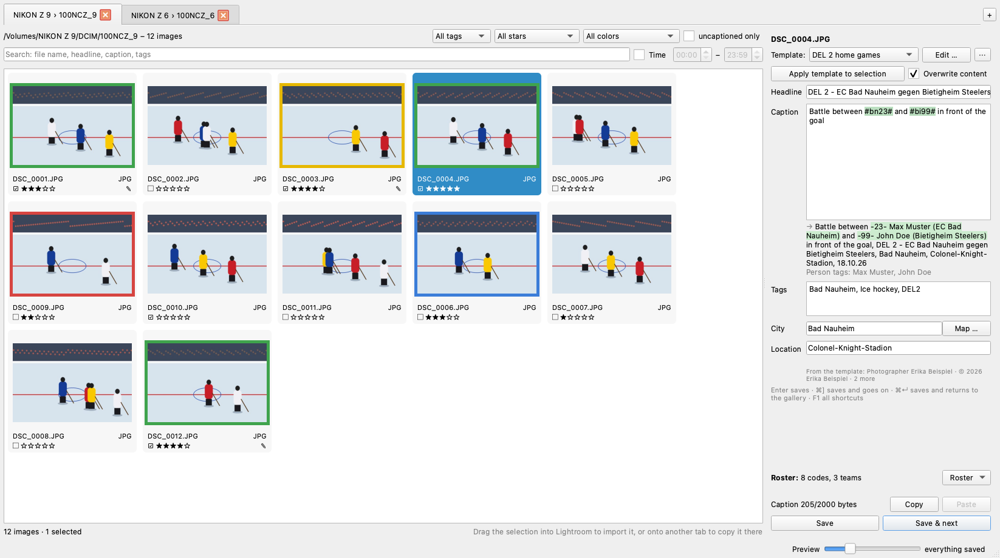
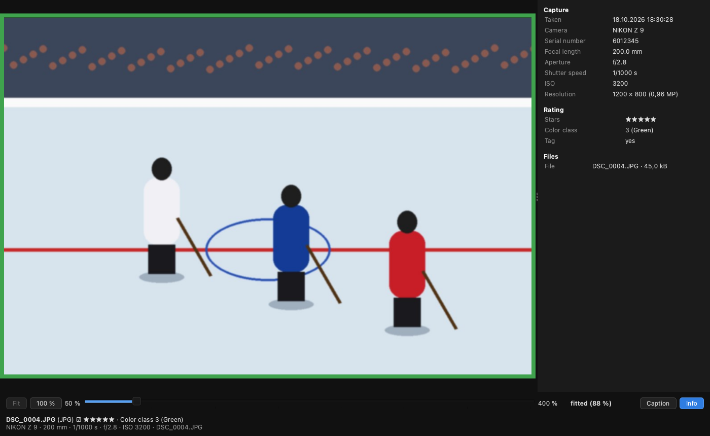
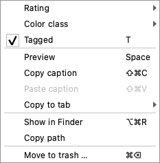
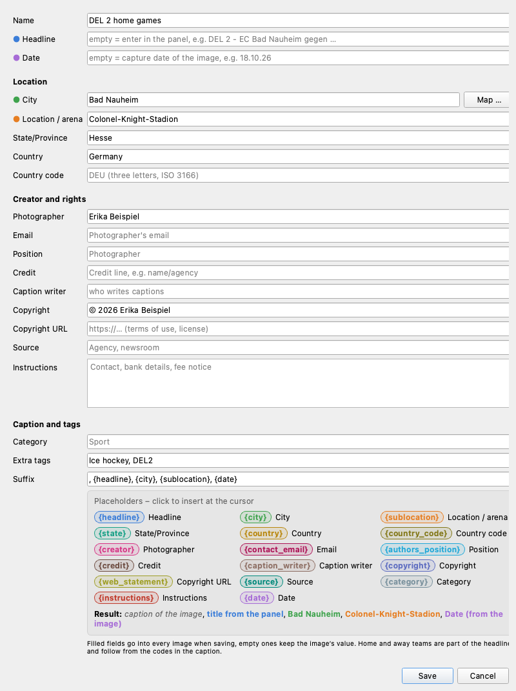
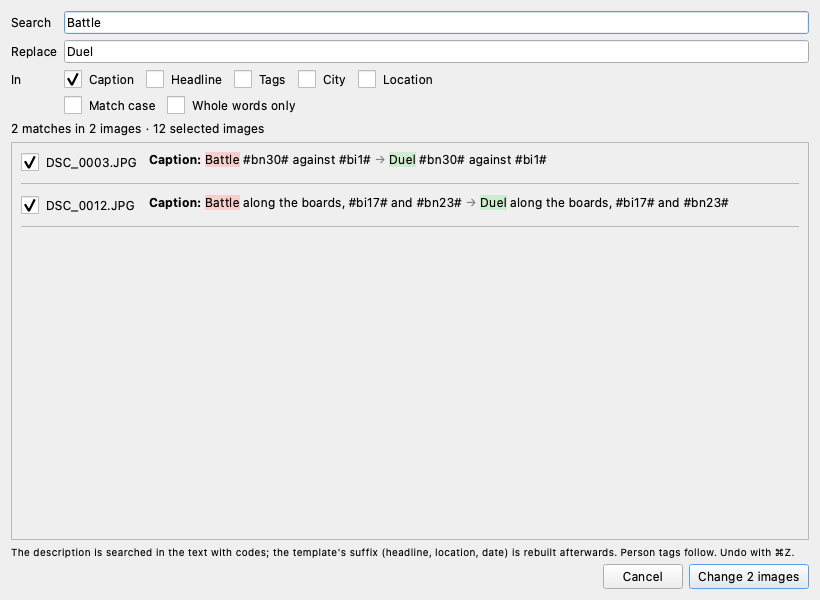
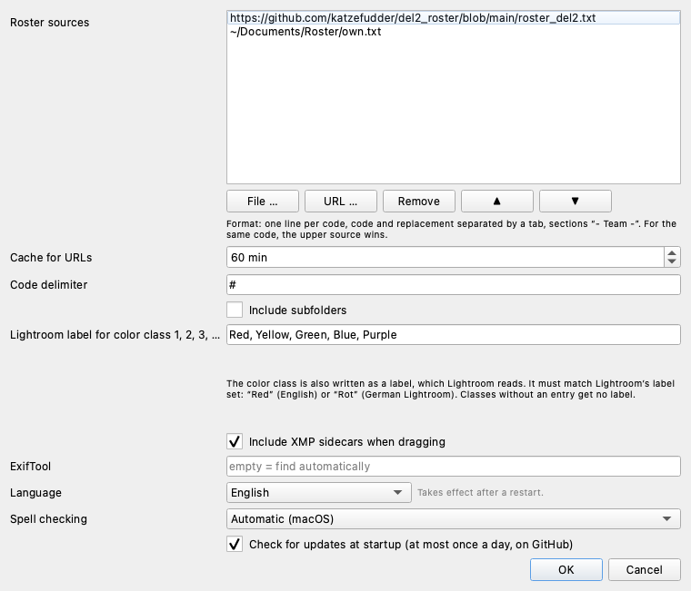
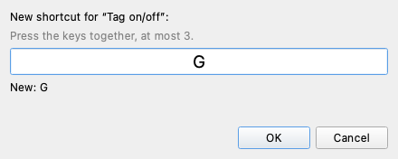

Captioner
Review, rate and caption photos
before importing them into Lightroom
Review, rate and caption photos
before importing them into Lightroom
Captioner is the tool between the memory card and Lightroom. You review the photos of a game, rate them, pick the keepers and caption them. Then you drag the selection into Lightroom, which takes over headline, caption, keywords, stars and color on import.
What makes it special are codes: instead of “-23- Max Muster (EC Bad Nauheim)”
you type #bn23#. Captioner suggests players as you type, inserts the full name
when saving and adds the person to the tags automatically. The codes live in roster
files that a team maintains once and everybody uses.
A typical workflow:
DEL 2 - EC Bad Nauheim gegen Bietigheim Steelers.Your files are safe. Captioner never changes RAW files (NEF, CR2, ARW …); everything goes into an XMP file next to them. JPG, DNG and TIFF are written via a copy that only replaces the original once the image data has been verified to be unchanged. More under Handing over to Lightroom.
Captioner runs on Macs with Apple silicon (M1 and later) with macOS 26 or newer. There are two ways to install it:
On first launch macOS may say that the app cannot be opened because it is not notarized by Apple. In that case open System Settings → Privacy & Security once and click “Open Anyway” at the bottom. After that the app starts normally.
ExifTool, which Captioner needs to read and write metadata, is built in.
Run the installer Captioner-…-x64-setup.exe. It installs for all users or,
without administrator rights, just for you. Optionally it creates a desktop icon and the entry
“Open with Captioner” in the context menu of folders and drives.
Windows SmartScreen warns on first launch because the installer is not signed: “More info” → “Run anyway”.
Windows differences: wherever this manual says ⌘, use Ctrl on Windows; ⌥ is Alt. Some shortcuts differ (see Keyboard shortcuts). Spell checking is only available on the Mac.
At most once a day, Captioner checks for a new version on startup. If there is one, “Update … available” appears at the bottom right; a click opens the download page. To check by hand: Help → Check for updates ….
Captioner follows the system language (German or English). You can choose it in the settings. Help → Manual (PDF) opens this manual in the language of the interface.

On the Mac the menus are in the menu bar at the top of the screen: Captioner (About, Settings, Quit), File (Open folder, Reload, Rename images, Close tab, Customize keyboard shortcuts), Edit (Undo, Redo, Find and replace), Template, Roster and Help (Manual, Keyboard shortcuts, Website, Updates).
There are several ways:
Captioner reads JPG, NEF and other RAW formats, DNG and TIFF.
If a folder contains no images itself but subfolders with images (the card itself or
DCIM), every image folder opens in its own tab. Drop two cards onto the window and
all image folders of both cards are open right away. With more than eight folders, Captioner
asks first.
If you prefer everything in one tab, turn on “Include subfolders” in the settings.
A click selects an image, ⌘-click and ⇧-click select several. The arrow keys move through the gallery, Home and End jump to the first or last image. ⌘A selects all, ⌘D clears the selection. The “Preview” slider at the bottom right sets the tile size.
Space or a double-click on a tile shows the image large; Space, Esc or ⌘W closes it again. ← and → move to the previous or next image. Stars, color classes and tags work with the same keys as in the gallery.

Zoom:
Zoom and visible area are kept when you move to the next image, so you can compare the sharpness of a burst at the same spot. 100 % is the full resolution of the preview embedded in the file; for Nikon NEFs that is the full sensor resolution.
Below the image you see the file name, tag, stars and color class, and at the very bottom the camera, lens, focal length, shutter speed, aperture, ISO and the files of the image, e.g. NIKON Z 9 · NIKKOR Z 70-200mm f/2.8 VR S · 200 mm · 1/500 s · f/2.8 · ISO 64 · DSC_0001.NEF.
Info panel: on the right are the image's EXIF and IPTC data: capture time with hundredths of a second, camera and serial number, lens, exposure, GPS, the caption and the files that belong to the image. “Info” hides and shows the panel; Captioner remembers your choice.
Captioning in the preview: I or “Caption” brings the caption panel next to the image and puts the cursor into the caption. ⌘N / ⌘B save and show the next or previous image large. While you type, digits, T, Z, +, - and the space bar do nothing else; a click on the image hands the keys back to the preview.
| What | macOS | Windows |
|---|---|---|
| Color class 1–8 · remove | 1–8 · 0 | 1–8 · 0 |
| Stars 1–5 · remove | ⌘1–⌘5 · ⌘0 | Ctrl+1–5 · Ctrl+0 |
| Tag on/off · on · off | T · + · - | T · + · - |
Everything applies to the selection, so also to many images at once, and can be undone with ⌘Z.

Right-clicking a tile opens a menu for the selection. If you click an image that is not selected, only that one is selected first (as in Finder).
It contains Rating and Color class (submenus, the current value is checked), Tagged, Preview, copy and paste caption, Copy to tab, Show in Finder (Windows: in Explorer), Copy path and Move to trash. Each entry shows its keyboard shortcut on the right.
The filters apply to all tabs; when you switch tabs they act on the new one.
<occasion> - <home> gegen <away>, e.g.
DEL 2 - EC Bad Nauheim gegen Bietigheim Steelers. The word gegen stays
German in the English interface too, because the later player recognition reads exactly that.
If the headline deviates, the panel warns but still saves. An image without a headline takes
the last one saved. Codes work in the headline as well, e.g. DEL 2 - #bn# gegen #bi#.A code sits between two hash signs: #bn23#. As soon as you type #bn, a
list of matching players opens; the two teams from the headline are at the top. Arrow keys and
Enter accept a suggestion.
Input
Battle between #bn23# and #bi99# in front of the goal
Saved as
Battle between -23- Max Muster (EC Bad Nauheim) and -99- John Doe (Bietigheim Steelers) in front of the goal, DEL 2 - EC Bad Nauheim gegen Bietigheim Steelers, Bad Nauheim, Colonel-Knight-Stadion, 18.10.26
Tags
Max Muster, John Doe, Ice hockey, DEL2
Known codes are highlighted green in the text, unknown ones red. An unknown code blocks saving, so a code never ends up in the file instead of a name. The resolved text is always what gets saved; Captioner remembers the text with codes so you can edit it later.
| What | macOS | Windows |
|---|---|---|
| Save | Enter | Enter |
| Save and next image | ⌘N or ⌘] | Ctrl+M or Alt+] |
| Save and previous image | ⌘B or ⌘[ | Alt+B or Alt+[ |
| Save and back to the gallery | ⌘Enter | Ctrl+Enter |
| Next · previous image without saving | ⌘⇧N · ⌘⇧B | Ctrl+⇧N · Ctrl+⇧B |
Saving is instant; the files are written in the background. The bottom right reads “everything saved” once all files are written. Below the caption Captioner counts the bytes: IPTC allows at most 2000 bytes for the caption. If a field is too long it turns red and saving is blocked.
With several images selected, headline, tags, city and location apply to all of them. The caption is only taken over if you changed it in the field; otherwise every image keeps its own.
⌘⇧C (or “Copy” in the panel) copies headline, caption, tags, city and location, including what is not saved yet. ⌘⇧V (or “Paste”) pastes into all selected images and saves. The codes are resolved again per image, and the suffix gets the date of the target image.
Typos in the caption are underlined in red, using the same dictionaries as Mail or Pages. Codes and names from the roster don't count as mistakes. A right-click shows suggestions, “Learn spelling” (then also applies in other apps) and “Ignore”. Choose the language in the settings.
A template holds everything that is always the same for a game or an arena. You choose it at the top of the panel; Edit … next to it opens it.

18.10.26; if it doesn't match an image's capture
date, the panel shows an orange warning.DEU).
“Map …” fills city, location, state and country in one go.Ice hockey, DEL2.{headline},
{city}, {sublocation}, {date}, {creator},
{copyright}. Clicking a placeholder in the legend inserts it, “Result” shows the
finished suffix. Empty placeholders are dropped together with their comma.Filled fields are written into every image when saving. Empty fields keep the image's value, e.g. photographer and copyright the camera has already entered.
“Apply template to selection” (⌘⌥A) sets headline, location, rights and tags for all selected images. With “Overwrite content” (on by default) everything is reset to the template and existing captions are cleared; without the check mark the captions stay.
In the Template menu and under ⋯ next to the selection:
, {headline}, {city}, {sublocation}, {date}. The dialog opens for you to check;
nothing is saved before OK..toml file onto the window). It stays linked: changes are
written back to exactly that file.A roster is a text file with one line per code: the code, a tab, then the text
to insert. Lines such as - EC Bad Nauheim - are section headers for a team.
- EC Bad Nauheim - bn23 -23- Max Muster (EC Bad Nauheim) bn9 -9- Tom Platzhalter (EC Bad Nauheim) - Bietigheim Steelers - bi99 -99- John Doe (Bietigheim Steelers) - Teams - bn EC Bad Nauheim bi Bietigheim Steelers
People are written as -number- Name (Team); that is how Captioner recognizes them
and adds the name to the tags. Team codes such as bn can be used in the headline.
Rosters come from web addresses (URLs), from files on the computer or both.
Roster → Add roster file … adds a file, or drag the .txt onto the window. In
the settings you can add, remove and reorder sources. If the same code has different texts in two
sources, the upper one wins and Captioner shows the conflict. Without internet, Captioner uses the
last version of a URL it loaded. “Reload roster” fetches all sources fresh.
Roster → Edit roster … opens an editor for the roster files on the computer. Tabs are highlighted blue. Lines that would be ignored when loading (space instead of tab, missing text) and contradictory duplicate codes are marked red and listed at the bottom; a click jumps to the line. ⌘F searches, ⌘S saves. Files are saved in their own character encoding, so rosters created on Windows stay intact.
Map … next to “City” (in the panel and in the template) opens an OpenStreetMap map:
Colonel-Knight-Stadion, then Enter. The map jumps there and fills city and
location. With several results, choose the right one.Every chosen place is remembered. When you type in “City”, Captioner suggests remembered places, even without internet. Without a connection the dialog shows a notice instead of the map; you can still enter city and location.
If the chosen place has coordinates, Captioner writes them into the file as GPS position when saving; Lightroom shows them in the Map module. This happens only for images without GPS: if the camera recorded GPS itself, it is left untouched. The note below “Location” says what will happen.
Captioner uses OpenStreetMap for the map. Searching only starts on Enter, at most once per second; the search text or the clicked point is sent to openstreetmap.org.
Edit → Find and Replace … (⌘⌥F) replaces text in the selected images, or in all shown images if nothing is selected.

#bn9# → #bn10#
therefore swaps the player including the person tag. A written-out name is found even where the
text has a code.⌘Z undoes the last change: stars, color class, tag, saved caption, paste, apply template, find and replace, also for many images at once. ⌘⇧Z redoes it. The Edit menu shows what will be undone. In a text field ⌘Z applies to what you just typed.
Moving to the trash (get images back from there in Finder or Explorer) and renaming cannot be undone.
Drag the selected images into the Lightroom grid. Lightroom opens the import dialog and takes over headline, caption, keywords, stars, color label, location, rights and GPS.
Before dragging, Captioner writes everything that is still pending. Images whose metadata is not safely stored (write error, or a captioned RAW file without an XMP file) are left out of the drag; Captioner tells you which ones.
| File | where to |
|---|---|
| NEF, CR2, ARW, … (RAW) | Into the XMP file next to it, <name>.xmp.
The RAW file is never changed. An existing XMP file (also .XMP from another
program) is updated. |
| JPG, DNG, TIFF | Into the file itself (IPTC, XMP, EXIF). Captioner writes to a copy that only replaces the original if the image data is unchanged. |
The XMP files are included in the drag (can be turned off in the settings).
Drag images from the gallery onto another tab (hovering over it briefly switches to it, so you can also drop them into its gallery), or use Copy to tab in the context menu. RAW, JPG and XMP file are copied together, with all saved metadata. The source stays as it is.
If a file already exists in the target, Captioner asks: Skip,
Rename (DSC_0001-2.NEF + -2.JPG + -2.xmp)
or Replace, optionally for all remaining ones. Cancelling never leaves half-written
files behind.
⌘⌫ (Windows: Del) or the context menu moves the selected images to the trash after asking, with all their files (RAW, JPG, XMP). Nothing is deleted permanently; the images can be restored from the trash.
File → Rename images … renames all images of the folder in the current tab. The dialog
has one field for the name, e.g. 20261023_MEM_EPC; Captioner appends the number
(20261023_MEM_EPC_001). What the name looks like is up to you. It suggests the name
you used last with today's date in front (YYYYMMDD), the first time just the date.
Numbering starts at 1 in order of capture time, padded with zeros to three digits
(001 to 999, four digits beyond that). RAW, JPG and XMP file of an image get
the same number, the extensions stay. If one of the new names already belongs to another file in
the folder, nothing is renamed. Captions, stars and color classes are kept.
⌘⌥R or the context menu opens the folder in Finder (Windows: Explorer) and selects the file. “Copy path” puts the file paths of the selection on the clipboard.
⌘, (Windows: File → Settings …).

#.Red, Yellow, Green, Blue, Purple for
an English Lightroom, Rot, Gelb, Grün, Blau, Lila for a German one.F1 (or Help → Keyboard shortcuts) shows all shortcuts as they are currently assigned. The tables here show the defaults.
| What | macOS | Windows |
|---|---|---|
| Open folder · reload | ⌘O · F5 | Ctrl+O · F5 |
| Color class 1–8 · remove | 1–8 · 0 | 1–8 · 0 |
| Stars 1–5 · remove | ⌘1–⌘5 · ⌘0 | Ctrl+1–5 · Ctrl+0 |
| Tag on/off · on · off | T · + · - | T · + · - |
| Preview | Space | Space |
| Edit caption | I or Enter | I or Enter |
| Select all · none · tagged | ⌘A · ⌘D · ⌘T | Ctrl+A · Ctrl+D · Ctrl+T |
| Tagged only · untagged only | F3 · F4 | F3 · F4 |
| Next · previous image | ⌘N · ⌘B | Ctrl+M · Alt+B |
| First · last · last viewed image | Home · End · L | Home · End · L |
| Copy · paste caption | ⌘⇧C · ⌘⇧V | Ctrl+⇧C · Ctrl+⇧V |
| Find and replace | ⌘⌥F | Ctrl+Alt+F |
| Load template · save as · apply | ⌘⌥L · ⌘⌥S · ⌘⌥A | Ctrl+Alt+L · S · A |
| Roster sources · reload | ⌃⌘C · ⌃⇧⌘C | Ctrl+Alt+C · Ctrl+Alt+⇧C |
| Undo · redo | ⌘Z · ⌘⇧Z | Ctrl+Z · Ctrl+⇧Z |
| Close tab · next · previous | ⌘W · ⌘⌥→ · ⌘⌥← | Ctrl+W · Ctrl+Alt+→ · ← |
| Trash · show in Finder/Explorer | ⌘⌫ · ⌘⌥R | Del · Ctrl+Alt+R |
| Settings · quit | ⌘, · ⌘Q | via the menu |
| This overview | F1 | F1 |
| What | macOS | Windows |
|---|---|---|
| Close | Esc, ⌘W, Space | Esc, Alt+W, Space |
| Previous/next image | ← → | ← → |
| Zoom on/off · in · out | Z or * · + · - | Z or * · + · - |
| Move visible area | ⌥ + arrow keys | Alt + arrow keys |
| Caption | I | I |
On German keyboards [ and ] are on ⌥5 and ⌥6; that is why there are letter alternatives everywhere (⌘N, ⌘B).

File → Customize keyboard shortcuts … lists all actions. Choose an action, then Change … (or double-click) or Add …, and press the new combination. The field shows what is currently pressed; at most three keys together, e.g. ⌘⇧K.
If the combination is already taken, the dialog says so; it is removed there when you confirm. Changed actions are shown in bold. “Default” and “Reset all to defaults” restore the standard assignment. New shortcuts take effect immediately.
Rot, Gelb, Grün, Blau, Lila). Classes 6–8 have no Lightroom label.<occasion> - <home> gegen <away>.
It is saved anyway, but the later player recognition can't match the game. “gegen” stays German
in the English interface too.~/Library/Application Support/captioner/, templates in the subfolder
templates. Quickest way there: Template → Show template folder in Finder.Captioner is free software under the GNU General Public License v3.0 or later.
www.katzefudder.de/captioner